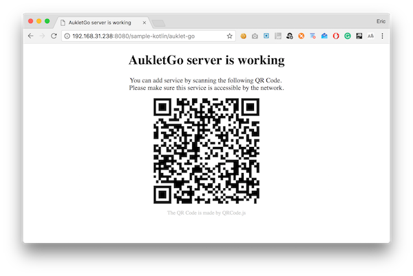
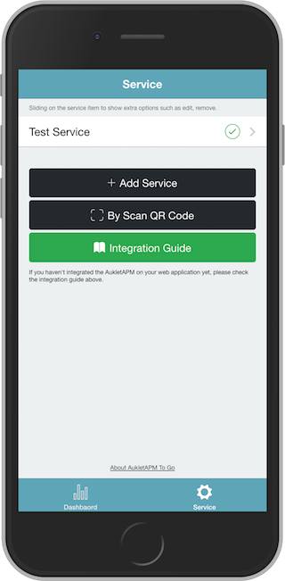
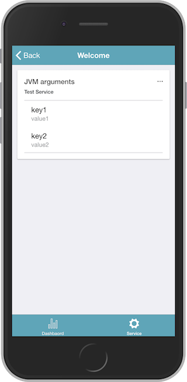

Getting started
Installation
Grab via Maven:
<dependency>
<groupId>com.aukletapm.go</groupId>
<artifactId>go</artifactId>
<version>1.3.2</version>
</dependency>
Grab via Gradle:
compile group: 'com.aukletapm.go', name: 'go', version: '1.3.2'
Kotlin & servlet integration
Configure AukletAPM To Go
import classes
import com.aukletapm.go.AukletApmToGo
create a service
val aukletApmToGoService = AukletApmToGo.createInstance("Test Service")
create the index page
val indexPage = aukletApmToGoService.startIndexPage("Welcome")
indexPage.endPage()
add a list to the index page to display some runtime status of your web application
indexPage
.startList("jvm_arguments", "JVM arguments")
.setContentLoader {
listOf(
AukletApmToGo.KeyValue("key1", "value1"),
AukletApmToGo.KeyValue("key2", "value2")
)
}
.endList()
Create a servlet handler
Using servlet handler, you can expose the "AukletAPM to Go" HTTP interface into any servlet environment.
Add servlet module
Grab via Maven:
<dependency>
<groupId>com.aukletapm.go</groupId>
<artifactId>go-servlet</artifactId>
<version>1.3.2</version>
</dependency>
Grab via Gradle:
compile group: 'com.aukletapm.go', name: 'go-servlet', version: '1.3.2'
Create a servlet handler
val servletHandler = AukletApmToGoHttpServletHandler
.Builder()
.enableCors() //not necessary when using Spring MVC
.service(aukletApmToGoService)
.build()
Full code of servlet integration
import com.aukletapm.go.AukletApmToGo
import com.aukletapm.go.servlet.AukletApmToGoHttpServletHandler
import javax.servlet.ServletConfig
import javax.servlet.annotation.WebServlet
import javax.servlet.http.HttpServlet
import javax.servlet.http.HttpServletRequest
import javax.servlet.http.HttpServletResponse
/**
*
* @author Eric Xu
* @date 15/03/2018
*/
@WebServlet("/aukletapm-to-go")
class AukletGoServlet : HttpServlet() {
private lateinit var servletHandler: AukletApmToGoHttpServletHandler
override fun init(config: ServletConfig?) {
val aukletGo = AukletApmToGo.createInstance("Test Service")
.startIndexPage("Welcome")
.startList("jvm_arguments", "JVM arguments")
.setContentLoader {
listOf(
AukletApmToGo.KeyValue("key1", "value1"),
AukletApmToGo.KeyValue("key2", "value2")
)
}
.endList()
.endPage()
servletHandler = AukletApmToGoHttpServletHandler
.Builder()
.enableCors() //not necessary when using Spring MVC
.service(aukletGo)
.build()
}
override fun doPost(req: HttpServletRequest?, resp: HttpServletResponse?) {
servletHandler.handle(req!!, resp!!)
}
override fun doGet(req: HttpServletRequest?, resp: HttpServletResponse?) {
servletHandler.handle(req!!, resp!!)
}
}
Add service into AukletAPM To Go
Then start your web application, open http://your-ip:port/context-path/aukletapm-to-go in the web browser, you will see the welcome page of the AukletAPM To Go server as follows:

Now, the server is runing. You can open the "AukletAPM To Go" scaning this QR Code to add your service into the "AukletAPM to Go".
After that, you can monitor all the status that you was configured which at your fingertips.
 